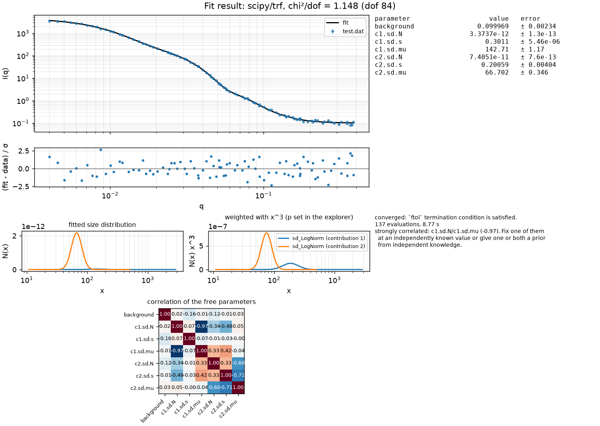

Results and export
The Result tab
After a fit the Result tab lists the optimiser, the number of evaluations, χ² and χ²/dof, every parameter with its error (and, for iminuit MINOS, its asymmetric errors; for DREAM the 68 % interval), parameters sitting at a bound, the state of the constraints, and the correlation matrix of the free parameters. Pairs with |r| ≥ 0.9 are listed with the usual remedies. Undo fit restores the values from before the fit. The Copy Python button below the plot copies code that reproduces the model.
Saving a result
Export result… in the Result tab writes one of
format |
content |
|---|---|
|
Summary, Parameters, Correlation, Covariance, Curve (with chart), Distributions (with chart), Plot, Report (needs |
|
parameters, correlation, covariance, curves and |
|
the summary figure (needs |
Copy summary image puts the same figure on the clipboard, ready to paste into a report or an e-mail.

The summary figure: data, fit and residuals, the size distributions N(x) and N(x)·xp, the parameters with errors and the correlation matrix.
Size distributions in the export
For every fitted size distribution the export contains N(x) and N(x)·xp on 400 logarithmic x points. The exponent p is read from the Size-distributions dock at the moment of the export and written into the file (sheet header, CSV header, figure title), so the file documents which weight was used.
From a script
p = 3.0 # weight: N(x) * x**p is exported next to N(x); 3 = volume weight
export.save_xlsx(os.path.join(OUT, "fit.xlsx"), res, prob, dist_power=p) # needs openpyxl
export.save_csv(os.path.join(OUT, "fit.csv"), res, prob, dist_power=p) # fit_parameters.csv, fit_curve.csv, fit_distributions.csv, ...
export.save_figure(os.path.join(OUT, "fit.pdf"), res, prob, dist_power=p) # .png and .svg work as well
png = export.figure_bytes(res, prob, fmt="png", dist_power=p) # bytes, e.g. for a report